Audit digitale toegankelijkheid van website planmer.zuid-holland.nl
Samenvatting
Wij hebben de website planmer.zuid-holland.nl onderzocht op 12 en 13 augustus 2026. Het onderzoek ging over twee onderdelen: de webapplicatie op planmer.zuid-holland.nl en de MER-publicaties op planmer.z6.web.core.windows.net. Op dit moment is een deel van de succescriteria als voldoende beoordeeld. In dit rapport lees je welke punten nog verbetering behoeven en hoe deze kunnen worden aangepakt.
De pagina's op planmer.z6.web.core.windows.net, waar de MER-publicaties staan
De PDF-documenten uit de steekproef
Buiten scope:
De kaartapplicatie onder de kop "Effectanalyse zoekgebieden zon en wind"; die inhoud komt van derden en is niet volledig onderzocht. Van die applicatie staan drie voorbeelden in dit rapport
Het gedeelte achter de inlog op planmer.zuid-holland.nl
Subwebsite(s) waarbij de HTML en/of het systeem afwijkt van de onderzochte website
Basisniveau toegankelijkheidsondersteuning
Mozilla Firefox, versie 152
Google Chrome, versie 150
Apple Safari, versie 18
PAC software om PDF's te testen
NVDA schermlezer in combinatie met Firefox
VoiceOver schermlezer in combinatie met Safari
Andere gangbare browsers en hulpapparatuur
Technologieën van de website
HTML
CSS
JavaScript
DOM
WAI-ARIA
SVG
PDF
Voortgang opgeloste bevindingen
Samenwerken met je team
Exporteer alle bevindingen als CSV-bestand. Je kunt het in een (online) spreadsheet inladen om met je team samen te werken.
Importeer in Jira
Exporteer alle bevindingen als Jira-compatibel CSV-bestand. Je kunt het direct importeren via Jira > Issues > Import issues from CSV.
Zelf bijhouden in de browser
Houd per bevinding bij of het is opgelost. Je voortgang wordt opgeslagen in jouw browser. Niemand anders kan je resultaat zien.
#1 - Kop-element gebruikt om tekst groter weer te geven
Impact: MediumType: InhoudWCAG: 1.3.1EN: 9.1.3.1
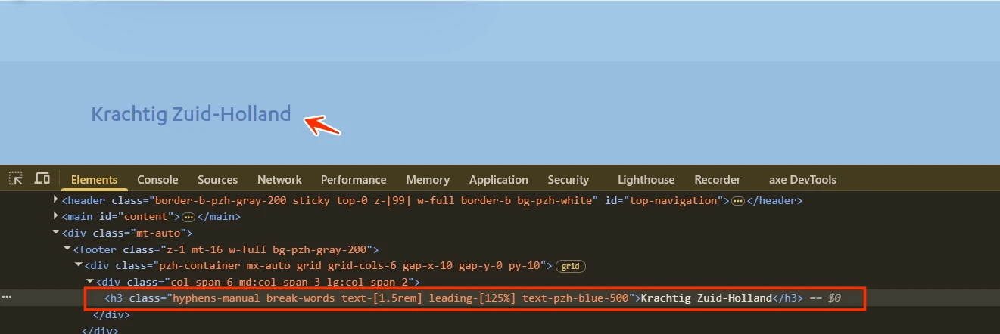
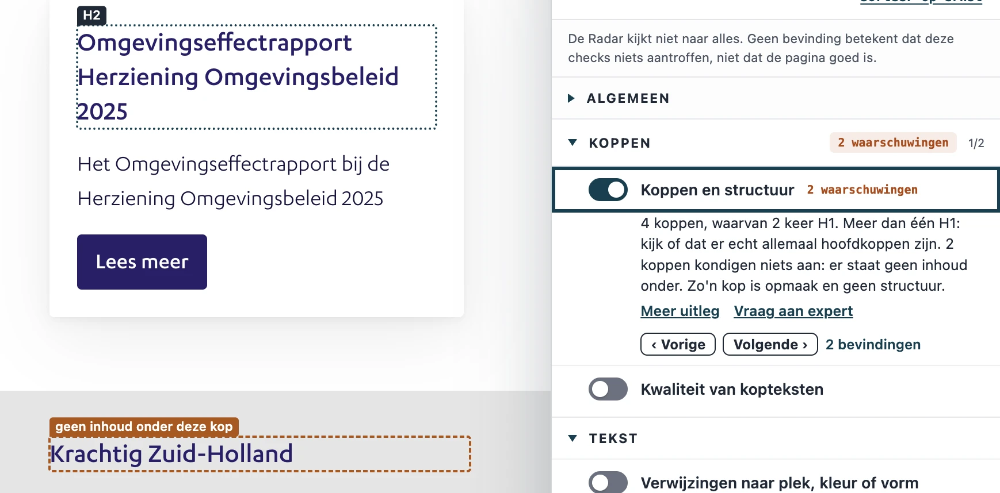
De teksten “Inloggen” en “Krachtig Zuid-Holland” zijn geen koppen. In de code staan ze wel in een h1- en een h3-element, om de tekst groter weer te geven. Een kop-element gebruiken voor alleen de opmaak is semantisch onjuist: een kop kondigt in de code een nieuw onderdeel van de inhoud aan.
User story
Ik lees de website met een schermlezer. Ik verwacht dat elke kop een nieuw onderdeel aankondigt. Het is verwarrend als er een kop-element staat op tekst die geen kop is.
Hoe te testen
Open de WCAG Radar en zet de optie "Koppen" aan om alle koppen op de pagina te zien.
Controleer bij elke kop of de tekst een eigen onderdeel van de inhoud aankondigt, of dat het alleen opmaak is (een inleidende zin, een naam, een citaat). Volgt er geen onderdeel op, dan hoort het geen kop te zijn.
Controleer het met een schermlezer: navigeer met H (NVDA, JAWS) of met de rotor (VoiceOver). Hoor je een kop die je zelf geen onderdeeltitel zou noemen, dan is het kop-element verkeerd gebruikt. Zo'n tekst hoort in een <p>-element met opmaak via CSS.
Oplossing
“Inloggen” en “Krachtig Zuid-Holland” hebben geen eigen inhoud onder zich. Verwijder de kop-elementen van deze teksten en gebruik CSS om de gewenste opmaak te realiseren.
Op deze pagina staat een formulier met invoervelden voor persoonlijke gegevens, bijvoorbeeld het e-mailadres en het wachtwoord. Bij die invoervelden ontbreekt het autocomplete-attribuut. Formulieren die persoonlijke gegevens uitvragen, horen dat attribuut te hebben op de invoervelden. Browsers en hulpsoftware kunnen de velden dan bijvoorbeeld automatisch invullen.
User story
Ik heb beperkte controle over mijn handen en soms tremoren. Als ik een formulier met mijn naam en e-mailadres moet invullen, kan mijn browser de velden niet automatisch invullen. Ik verwacht dat velden met persoonlijke gegevens door mijn browser of hulpsoftware worden ingevuld.
Hoe te testen
Bekijk bij elk invoerveld dat persoonlijke gegevens uitvraagt (naam, adres, telefoonnummer, e-mailadres, wachtwoord) het autocomplete-attribuut. De waarde moet een van de invoerdoelen zijn die WCAG beschrijft; zie de link onder Oplossing. Laat daarna de browser het formulier automatisch invullen en controleer of de juiste waarde in het juiste veld komt.
#3 - Foutmelding is niet verbonden met het invoerveld
Impact: GrootType: TechniekWCAG: 1.3.1EN: 9.1.3.1
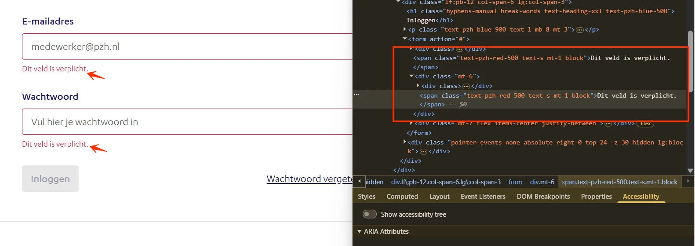
In het formulier op deze pagina verschijnt de foutmelding “Dit veld is verplicht.” Het verband tussen die foutmelding en het bijbehorende invoerveld ligt niet vast in de code. Een schermlezer leest de foutmelding daardoor niet voor bij het veld.
User story
Ik lees de website met een schermlezer. Als ik een formulierveld invul en een fout maak, wordt de foutmelding niet bij dat veld voorgelezen. Ik verwacht dat mijn schermlezer de foutmelding voorleest zodra ik bij het veld kom.
Hoe te testen
Open de WCAG Radar en zet de optie "Formulieren" aan. Je ziet dan bij elk veld welke beschrijving eraan is gekoppeld. Roep de fout op en controleer of de foutmelding met aria-describedby aan het veld is gekoppeld. Luister daarna met een schermlezer: als je bij het veld komt, moet je de foutmelding horen.
Oplossing
Laat het aria-describedby-attribuut op het invoerveld verwijzen naar de id van de foutmelding. Daarmee ligt het verband tussen het invoerveld en de fout vast in de code.
#4 - Foutmelding wordt niet als statusbericht aangekondigd
Impact: GrootType: TechniekWCAG: 4.1.3EN: 9.4.1.3
Als er een fout in het formulier zit, verschijnt er een foutmelding. Die melding wordt niet door een schermlezer aangekondigd.
User story
Ik lees de website met een schermlezer. Als ik een formulier verstuur en er verschijnt een foutmelding, blijft mijn schermlezer stil. Ik verwacht dat de foutmelding automatisch wordt voorgelezen zodra hij verschijnt.
Hoe te testen
Loop met een schermlezer aan elke actie op de pagina langs die een statusbericht oplevert zonder dat er een nieuwe pagina laadt: een formulier versturen, iets aan de winkelwagen toevoegen, zoeken, wachten op een laadindicator. Elk bericht moet worden aangekondigd zonder dat de focus ernaartoe gaat, meestal met role="status", aria-live="polite" of een vergelijkbare live region.
Oplossing
Voeg aria-live="polite" toe aan het element dat de foutmelding bevat. De schermlezer leest de melding dan automatisch voor zodra hij verschijnt.
#5 - Foutmelding legt niet uit hoe de fout op te lossen is
In het formulier op deze pagina verschijnt de foutmelding “Dit veld is verplicht.” Die melding legt niet uit hoe de fout op te lossen is. Een goede foutmelding zegt duidelijk wat je moet doen, bijvoorbeeld: “Het veld XXX is niet (goed) ingevuld.”
User story
Ik lees langzamer door een cognitieve beperking, slechtziendheid of dyslexie. Als ik een formulier verkeerd invul, zegt de foutmelding alleen dat het veld verplicht is. Ik verwacht dat de foutmelding vertelt wat ik moet invullen om verder te kunnen.
Hoe te testen
Verstuur het formulier met lege velden of met bewust verkeerde gegevens en lees de foutmeldingen. Ze moeten duidelijk maken hoe de fout op te lossen is: geef het verwachte formaat, een voorbeeldwaarde of een lijst met geldige opties. Een algemene tekst als "dit veld is verplicht" is niet genoeg. Regels voor een wachtwoord horen al zichtbaar te zijn voordat het formulier wordt verstuurd.
Oplossing
Pas de foutmelding aan, zodat de bezoeker weet wat hij moet doen om de fout op te lossen.
#6 - Meerdere pagina's hebben dezelfde paginatitel
Impact: MediumType: InhoudWCAG: 2.4.2EN: 9.2.4.2
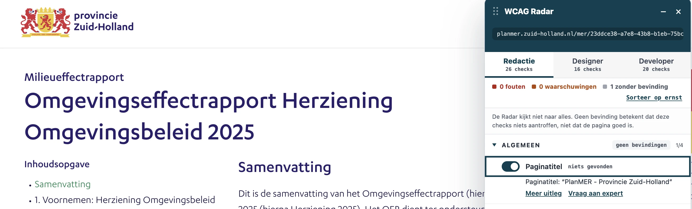
Deze pagina heeft in het <title>-element de tekst “PlanMER • Provincie Zuid-Holland”. De pagina https://planmer.zuid-holland.nl/ heeft “PlanMER - Provincie Zuid-Holland”. Die twee titels klinken hetzelfde en geen van beide beschrijft de inhoud van de pagina. Ook de MER-pagina's op planmer.zuid-holland.nl dragen die titel, welk rapport of welke paragraaf je ook opent. Elke pagina hoort een unieke en beschrijvende titel te hebben. Dezelfde titel op meerdere pagina's maakt navigeren tussen die pagina's moeilijker, vooral voor bezoekers die de titelbalk of de browsertabs gebruiken om pagina's te onderscheiden.
Ik lees de website met een schermlezer. Als ik meerdere tabs open heb, klinken de paginatitels hetzelfde en kan ik niet horen welke tab welke pagina is. Ik verwacht dat elke pagina een unieke titel heeft die de inhoud beschrijft.
Hoe te testen
Bekijk van elke pagina de titel in de browsertab. De titel moet het onderwerp of het doel van de pagina beschrijven en binnen de website uniek zijn. Ook PDF's en app-schermen hebben een betekenisvolle titel nodig, ingesteld in de documenteigenschappen en niet alleen zichtbaar op het scherm.
Oplossing
Pas het <title>-element aan, zodat elke pagina een unieke en informatieve titel heeft die de inhoud van die pagina weergeeft.
#7 - Decoratieve afbeelding is niet verborgen voor schermlezers
Impact: MediumType: InhoudWCAG: 1.1.1EN: 9.1.1.1
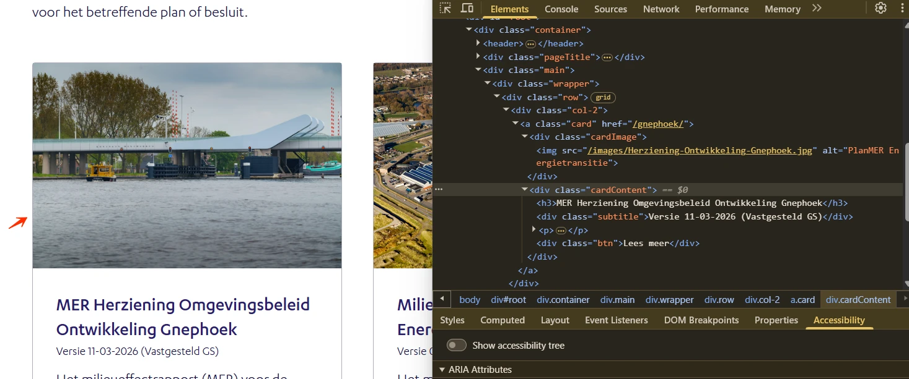
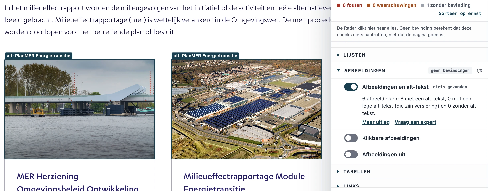
Op deze pagina staan artikelen met decoratieve afbeeldingen. Die afbeeldingen hebben een tekstalternatief, bijvoorbeeld "PlanMER Energietransitie". Decoratieve afbeeldingen dragen geen informatie en horen verborgen te zijn voor schermlezers.
Deze bevinding hangt samen met succescriterium 1.3.2; zie de volgende bevinding.
User story
Ik lees de website met een schermlezer. Bij een decoratieve afbeelding leest mijn schermlezer inhoud voor die er niet toe doet. Ik verwacht dat decoratieve afbeeldingen worden overgeslagen en niet worden aangekondigd.
Hoe te testen
Open de WCAG Radar en zet de optie "Afbeeldingen en alt-tekst" aan. Je ziet bij elke afbeelding, elk icoon en elke SVG of er een tekstalternatief is en wat daar staat. Informatieve elementen hebben een toegankelijke naam nodig die hun betekenis overbrengt: een alt-attribuut op een <img>, een aria-label of een <title>-element op een SVG, of een toegankelijke naam op een icoonfont. Decoratieve elementen horen niet in de HTML te staan; gebruik daarvoor een CSS-achtergrond. Staat een decoratief element toch in de HTML, verberg het dan voor hulpsoftware met aria-hidden="true", of met een leeg alt-attribuut als het een <img> is. Luister daarna met een schermlezer: die mag geen bestandsnaam of het woord "afbeelding" voorlezen.
Oplossing
Dat kan op twee manieren:
Geef img-elementen een leeg alt-attribuut: alt="".
Zorg bij svg-elementen dat het title-element leeg is, of verberg de SVG met aria-hidden="true".
#8 - Leesvolgorde is niet logisch
Impact: MediumType: InhoudWCAG: 1.3.2EN: 9.1.3.2
Op deze pagina staan verschillende artikelen. Elk artikel bevat een afbeelding met een tekstalternatief, en die afbeelding staat in de broncode boven de kop. Wie de artikelen van boven naar beneden leest, kan daardoor niet zien bij welk artikel de afbeelding hoort.
User story
Ik lees de website met een schermlezer. Als ik artikelen op volgorde beluister, hoor ik de afbeelding en de datum voor de kop en weet ik niet bij welk artikel ze horen. Ik verwacht dat de kop eerst komt, zodat ik de inhoud eronder aan het juiste artikel kan koppelen.
Hoe te testen
Zet CSS uit (DevTools > Toggle stylesheet) en lees de pagina van boven naar beneden. Het verhaal moet dan nog te volgen zijn. Let vooral op overzichten van blogs en nieuws, waar de datum, de afbeelding en de titel van plaats kunnen wisselen.
Oplossing
Zet bij artikelen met een afbeelding, tekst en een kop de kop als eerste in de HTML. De inhoud die op de kop volgt, hoort dan bij die kop, ongeacht de visuele plaatsing. De volgorde die wij aanraden is: kop, afbeelding, tekst. Hulpsoftware leest de inhoud dan in een volgorde waarin het verband duidelijk is. Een andere oplossing is de afbeelding voor de schermlezer te verbergen.
#9 - Tekstalternatief herhaalt tekst die er al staat
Impact: MediumType: InhoudWCAG: 1.1.1EN: 9.1.1.1
Op deze pagina staat onder de kop "MER Herziening Omgevingsbeleid Ontwikkeling Gnephoek" een afbeelding. Het tekstalternatief van die afbeelding is dezelfde tekst als de kop. De afbeelding voegt daarmee geen informatie toe aan wat er al op de pagina staat en is dus decoratief.
Ik lees de website met een schermlezer. Bij een afbeelding naast beschrijvende tekst leest mijn schermlezer dezelfde informatie twee keer voor. Ik verwacht dat de afbeelding wordt overgeslagen, zodat ik de tekst één keer hoor.
Hoe te testen
Open de WCAG Radar en zet de optie "Afbeeldingen en alt-tekst" aan. Je ziet bij elke afbeelding, elk icoon en elke SVG of er een tekstalternatief is en wat daar staat. Vergelijk dat tekstalternatief met de tekst die er direct naast staat. Luister daarna met een schermlezer of dezelfde informatie twee keer wordt voorgelezen.
Oplossing
Geef deze afbeeldingen een leeg alt-attribuut (alt=""), zodat bezoekers met een schermlezer de informatie één keer horen.
Onder de kop “Effectanalyse zoekgebieden zon en wind” staat een kaartapplicatie. Die applicatie is van derden afkomstig en is niet volledig onderzocht. Van die applicatie staan drie voorbeelden in dit rapport: de knop om de applicatie op een groot scherm te openen, het logo en de koppen.
#10 - Dialoogvenster heeft geen rol en geen naam
Impact: GrootType: TechniekWCAG: 4.1.2EN: 9.4.1.2
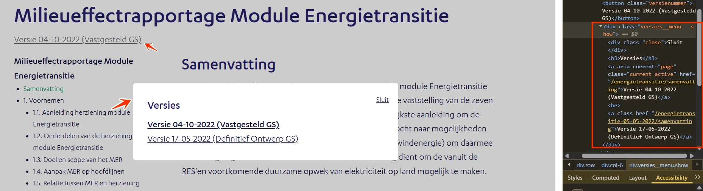
Op deze pagina opent de knop “Versie 04-10-2022 (Vastgesteld GS)” een dialoogvenster. Dat dialoogvenster heeft geen rol en geen toegankelijke naam. Schermlezers kunnen daardoor niet aankondigen dat het om een dialoogvenster gaat, en ook niet waarover het gaat.
Ik lees de website met een schermlezer. Als er een dialoogvenster opent, kondigt mijn schermlezer dat niet aan en hoor ik ook niet wat erin staat. Ik verwacht dat mijn schermlezer vertelt dat er een dialoogvenster is geopend en wat het bevat.
Hoe te testen
Bekijk elk interactief onderdeel (link, knop, invoerveld, eigen widget) in het toegankelijkheidspaneel van DevTools en met een schermlezer. Elk onderdeel moet overbrengen: wat het is (de rol), de naam, de huidige status (uitgeklapt, geselecteerd, aangevinkt) en waar van toepassing de waarde. Geef native HTML de voorkeur boven eigen ARIA.
Oplossing
Geef het dialoogvenster de rol dialog en een toegankelijke naam, bijvoorbeeld met role="dialog" en aria-label="Versie 04-10-2022 (Vastgesteld GS)".
#11 - Sluitknop in het dialoogvenster heeft niet de juiste rol
Impact: GrootType: TechniekWCAG: 4.1.2EN: 9.4.1.2
Op deze pagina opent de knop “Versie 04-10-2022 (Vastgesteld GS)” een dialoogvenster. In dat dialoogvenster staat een knop “Sluit” die niet de juiste rol heeft. Schermlezers herkennen dat element daardoor niet als knop. Bezoekers die blind zijn, weten dan niet dat ze het element kunnen activeren.
Ik lees de website met een schermlezer. Als ik door de pagina navigeer, hoor ik niet dat een element een knop is. Ik verwacht dat mijn schermlezer aankondigt dat ik het kan activeren.
Hoe te testen
Bekijk het interactieve element en controleer of het de rol button heeft: een schermlezer hoort "knop" aan te kondigen. Controleer daarna met het toetsenbord of zowel Enter als de spatiebalk het element activeert.
Oplossing
Geef de knop de juiste rol, op een van deze twee manieren:
Gebruik het button-element. Dat element heeft de rol van knop al.
Voeg role="button" toe. Dat is nodig als er een ander element wordt gebruikt, wat wij niet aanraden.
#12 - Toetsenbordfocus komt buiten het dialoogvenster
Impact: GrootType: TechniekWCAG: 2.4.3EN: 9.2.4.3
Op deze pagina opent de knop “Versie 04-10-2022 (Vastgesteld GS)” een dialoogvenster. De toetsenbordfocus kan uit het geopende dialoogvenster stappen en naar de inhoud van de pagina eronder gaan. Zolang een modaal dialoogvenster open staat, hoort de toetsenbordfocus binnen dat dialoogvenster te blijven.
Ik gebruik de website met een toetsenbord en een schermlezer. Als een dialoogvenster open staat en ik langs alle elementen daarin ben geweest, brengt de volgende Tab mij naar de pagina erachter. Ik verwacht dat de focus in het dialoogvenster blijft totdat ik het sluit.
Hoe te testen
Navigeer met de Tab-toets van het ene element naar het andere en controleer of de focusvolgorde logisch is. De focusvolgorde mag afwijken van de visuele volgorde, zolang die logisch blijft.
Oplossing
Houd de focus met JavaScript binnen het dialoogvenster totdat het wordt gesloten, met de sluitknop of met de Escape-toets. Een andere mogelijkheid is het dialoogvenster te sluiten zodra de focus het venster verlaat.
#13 - Toetsenbordfocus wordt bedekt door het dialoogvenster
Op deze pagina opent de knop “Versie 04-10-2022 (Vastgesteld GS)” een dialoogvenster. Op een klein scherm bedekt dat dialoogvenster een deel van de pagina. Interactieve elementen onder het dialoogvenster kunnen nog toetsenbordfocus krijgen, terwijl ze visueel bedekt zijn.
Elementen die focusbaar zijn mogen nooit volledig door andere content bedekt worden. Er moet altijd een gedeelte zichtbaar zijn, hoe klein ook.
Ik gebruik de website met een toetsenbord. Als ik met Tab door de pagina ga, kom ik soms op een element dat ik niet kan zien. Ik verwacht dat alleen zichtbare elementen toetsenbordfocus krijgen.
Hoe te testen
Loop met de Tab-toets door de pagina terwijl sticky headers, sticky footers, cookiemeldingen en chatvensters in beeld zijn. Bij elke stap moet minstens een deel van het element met de focusindicator zichtbaar zijn.
Oplossing
Zorg dat alleen zichtbare elementen toetsenbordfocus kunnen krijgen. Zolang het dialoogvenster open staat, horen de elementen eronder geen focus te krijgen.
#14 - Koppen zijn niet als kop gemarkeerd
Impact: MediumType: InhoudWCAG: 1.3.1EN: 9.1.3.1
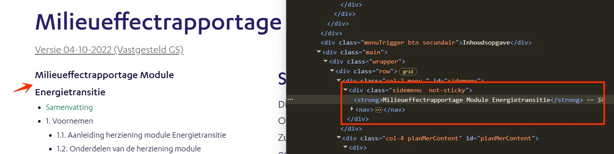
Op deze pagina zijn verschillende teksten visueel opgemaakt als kop, maar in de code is dat niet het geval. Er staat een strong-element om de tekst op een kop te laten lijken. Zie “Milieueffectrapportage Module Energietransitie”, en verder op de pagina bijvoorbeeld “Windenergie” en “Zonne-energie”.
Het strong-element betekent "belangrijk". Wie het in plaats van een kop-element (h1 tot h6) gebruikt, geeft de structuur van de inhoud verkeerd weer en maakt die structuur onbruikbaar voor hulpsoftware.
User story
Ik lees de website met een schermlezer. Als ik van kop naar kop navigeer, mis ik de koppen die niet als kop zijn gemarkeerd. Ik verwacht dat alle koppen echte koppen zijn, zodat ik de structuur van de pagina kan volgen.
Hoe te testen
Open de WCAG Radar, zet de optie "Koppen" aan en controleer elke kop op de pagina. Krijgt een kop geen label h1 tot h6, dan is die kop niet goed gemarkeerd.
Oplossing
Verwijder de strong-elementen en gebruik voor deze teksten de juiste kop-elementen.
#15 - Iframe heeft geen title-attribuut
Impact: GrootType: TechniekWCAG: 4.1.2EN: 9.4.1.2
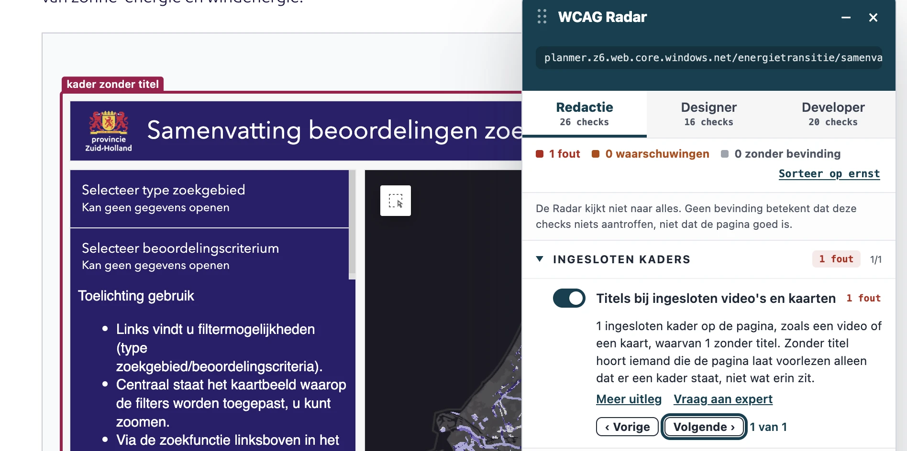
Op deze pagina staat onder de kop “Effectanalyse zoekgebieden zon en wind” een <iframe>-element zonder title-attribuut. Een schermlezer kan daardoor niet aankondigen waarvoor het iframe dient. Bezoekers weten niet welke inhoud er is ingesloten en of het zin heeft om erin te gaan.
User story
Ik lees de website met een schermlezer. Bij een ingesloten element hoor ik geen beschrijving en weet ik niet wat erin staat. Ik verwacht dat mijn schermlezer een duidelijke naam aankondigt, zodat ik kan besluiten of ik het bekijk.
Hoe te testen
Bekijk in DevTools elk iframe op de pagina. Controleer of elk iframe een title-attribuut heeft met een korte beschrijving van de inhoud. Controleer daarna met een schermlezer of die titel wordt aangekondigd zodra je bij het iframe komt.
Oplossing
Voeg aan het <iframe>-element een title-attribuut toe dat de ingesloten inhoud beschrijft, bijvoorbeeld <iframe title="Effectanalyse zoekgebieden zon en wind" src="...">.
#16 - Tooltip-knop heeft niet de juiste rol
Impact: GrootType: TechniekWCAG: 4.1.2EN: 9.4.1.2
Op deze pagina staat onder de kop “Zoekgebieden zon en wind” een tooltip-knop “[2]”. Die knop heeft niet de juiste rol. Schermlezers herkennen het element daardoor niet als knop. Bezoekers die blind zijn, weten dan niet dat ze het element kunnen activeren.
Ik lees de website met een schermlezer. Als ik door de pagina navigeer, hoor ik niet dat een element een knop is. Ik verwacht dat mijn schermlezer aankondigt dat ik het kan activeren.
Hoe te testen
Bekijk het interactieve element en controleer of het de rol button heeft: een schermlezer hoort "knop" aan te kondigen. Controleer daarna met het toetsenbord of zowel Enter als de spatiebalk het element activeert.
Oplossing
Geef de knop de juiste rol, op een van deze twee manieren:
Gebruik het button-element. Dat element heeft de rol van knop al.
Voeg role="button" toe. Dat is nodig als er een ander element wordt gebruikt, wat wij niet aanraden.
#17 - Extra inhoud bij hover verdwijnt zodra de aanwijzer ernaartoe gaat
Op deze pagina staan tooltips die extra inhoud openen. Beweeg je de aanwijzer van de tooltip-knop naar die extra inhoud, dan verdwijnt de inhoud voordat de aanwijzer er is.
Bezoekers die het scherm vergroten, zien maar een klein deel van het scherm en moeten met de aanwijzer over de extra inhoud gaan om die te lezen. Verdwijnt de inhoud zodra de aanwijzer het oproepende element verlaat, dan kunnen zij de informatie niet lezen. WCAG vraagt dat inhoud die bij hover verschijnt, in beeld blijft zolang de aanwijzer erover gaat. Die eis geldt voor gebruik met een aanwijzer; voor gebruik met het toetsenbord gelden de eisen dat de inhoud te sluiten is en in beeld blijft.
Als ik met de aanwijzer over een element ga en er verschijnt extra inhoud, verdwijnt die zodra ik mijn aanwijzer ernaartoe beweeg. Ik verwacht dat de extra inhoud in beeld blijft terwijl ik er met mijn aanwijzer naartoe ga om te lezen.
Hoe te testen
Ga met de aanwijzer over elk element dat extra inhoud toont (tooltips, uitklapmenu's, popovers). De extra inhoud moet met Escape te sluiten zijn, met de aanwijzer te bereiken zijn, en in beeld blijven totdat je hem zelf sluit. Doe dezelfde controle met alleen het toetsenbord.
Oplossing
Zorg dat de extra inhoud in beeld blijft wanneer de aanwijzer van het oproepende element naar die inhoud beweegt.
#18 - Extra inhoud is niet met het toetsenbord op te roepen
Impact: GrootType: TechniekWCAG: 2.1.1EN: 9.2.1.1
Op deze pagina staat onder de kop “Zoekgebieden zon en wind” een tooltip-knop “[2]”. Die tooltip toont extra inhoud zodra de aanwijzer erover gaat. Met het toetsenbord is die inhoud niet op te roepen. Extra inhoud die bij hover verschijnt, moet ook beschikbaar zijn voor bezoekers die alleen een toetsenbord gebruiken.
Ik gebruik de website met een toetsenbord. Als ik door de pagina navigeer en een knop krijgt focus, verschijnt de extra inhoud niet. Ik verwacht dat dezelfde informatie ook zonder muis te zien is.
Hoe te testen
Ga met de Tab-toets naar het element dat extra inhoud toont zodra de aanwijzer erover gaat. Dezelfde inhoud moet ook verschijnen zodra het element toetsenbordfocus krijgt. Verschijnt er niets bij focus, dan is de extra inhoud niet met het toetsenbord op te roepen.
Oplossing
Maak deze functie ook met het toetsenbord beschikbaar: toon de inhoud van de tooltip zodra de knop toetsenbordfocus krijgt, eventueel met Enter of de spatiebalk om de tooltip open te houden. Een alternatieve route naar dezelfde inhoud kan ook.
#19 - Datatabel mist de juiste markering
Impact: MediumType: InhoudWCAG: 1.3.1EN: 9.1.3.1
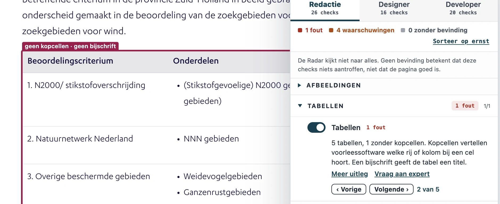
Op deze pagina staat onder de kop “Beoordelingscriteria zoekgebieden zon en wind” een datatabel. De juiste markering ontbreekt.
Een datatabel heeft een kolom of rij met kopcellen die bij de datacellen horen. Een schermlezer heeft de juiste markering nodig om dat verband over te brengen aan een bezoeker die blind is.
User story
Ik lees de website met een schermlezer. Als mijn schermlezer een tabel voorleest, hoor ik alleen de inhoud van de cellen zonder context. Ik verwacht dat mijn schermlezer bij elke cel de bijbehorende kop aankondigt.
Hoe te testen
Open de WCAG Radar en zet de optie "Tabellen" aan, of bekijk de eerste rij en de eerste kolom van de tabel in DevTools. Kopcellen horen een <th>-element te zijn en geen <td>-element met vette opmaak. Controleer met een schermlezer of de koppen samen met de datacellen worden aangekondigd.
Oplossing
Zet de kopcellen in <th>-elementen en de datacellen in <td>-elementen. Een minimale toegankelijke datatabel ziet er zo uit:
#20 - Knop in de kaartapplicatie heeft niet de juiste rol en naam
Impact: GrootType: TechniekWCAG: 4.1.2EN: 9.4.1.2
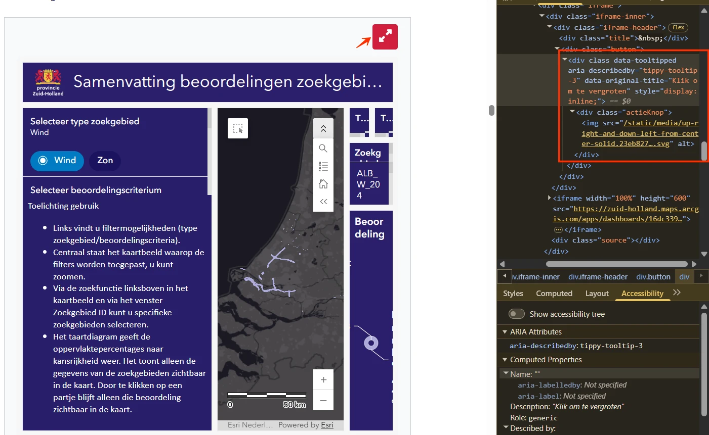
In de kaartapplicatie onder de kop “Effectanalyse zoekgebieden zon en wind” staat een knop om de applicatie op een groot scherm te openen. Die knop heeft niet de juiste rol en geen toegankelijke naam. Schermlezers herkennen het element daardoor niet als knop, en bezoekers die blind zijn weten niet dat ze het kunnen activeren. Zonder toegankelijke naam is ook niet duidelijk waarvoor de knop dient.
User story
Ik lees de website met een schermlezer. Als ik door de pagina navigeer, hoor ik niet dat een element een knop is. Ik verwacht dat mijn schermlezer aankondigt dat ik het kan activeren.
Hoe te testen
Bekijk het interactieve element en controleer of het de rol button heeft: een schermlezer hoort "knop" aan te kondigen. Controleer daarna met het toetsenbord of zowel Enter als de spatiebalk het element activeert.
Oplossing
Geef de knop de juiste rol, op een van deze twee manieren:
Gebruik het button-element. Dat element heeft de rol van knop al.
Voeg role="button" toe. Dat is nodig als er een ander element wordt gebruikt, wat wij niet aanraden.
Geef de knop daarnaast een toegankelijke naam:
Met aria-label op het button-element, met een beschrijvende tekst.
Met een beschrijvend alt-attribuut als de knop een afbeelding bevat, bijvoorbeeld alt="op een groot scherm openen".
#21 - Logo in de kaartapplicatie heeft geen tekstalternatief
Impact: GrootType: TechniekWCAG: 1.1.1EN: 9.1.1.1
Het logo boven in de kaartapplicatie heeft geen tekstalternatief. Een logo is een informatieve afbeelding en heeft een tekstalternatief nodig. In dat tekstalternatief hoort de volledige tekst te staan die in het logo zichtbaar is. Bezoekers die de afbeelding niet kunnen zien, weten dan ook wat er staat.
User story
Ik lees de website met een schermlezer. Ik wil dat het logo een betekenisvol tekstalternatief heeft, zodat ik weet wat er staat en, als het een link is, waar die naartoe gaat.
Hoe te testen
Ga met een schermlezer naar het logo en controleer of het wordt aangekondigd met een tekstalternatief waaruit de organisatie of de website blijkt. Het logo mag niet worden aangekondigd als een link of afbeelding zonder naam, en het tekstalternatief hoort de volledige zichtbare tekst te bevatten.
Oplossing
Voeg een tekstalternatief toe aan deze afbeelding.
#22 - Kop in de kaartapplicatie is niet als kop gemarkeerd
Impact: MediumType: InhoudWCAG: 1.3.1EN: 9.1.3.1
In de kaartapplicatie zijn teksten visueel opgemaakt als kop, terwijl ze in de code geen kop zijn. Zie bijvoorbeeld “Selecteer beoordelingscriterium”. Koppen brengen de structuur van de informatie op de pagina over. Zonder echte kop-elementen komt de structuur in de code niet overeen met wat er op de pagina te zien is, en missen bezoekers die hulpsoftware gebruiken die structuur.
User story
Ik lees de website met een schermlezer. Ik laat de koppen voorlezen om de inhoud van de pagina te overzien, en ik navigeer van kop naar kop. Als koppen niet als kop zijn gemarkeerd, mis ik die onderdelen en kan ik minder makkelijk navigeren.
Ik lees de website met een schermlezer. Als een kaart op de pagina geen tekstalternatief heeft, hoor ik geen beschrijving van die kaart. Ik verwacht dat de informatie van de kaart ook als tekst beschikbaar is.
Hoe te testen
Open de WCAG Radar en zet de optie "Afbeeldingen en alt-tekst" aan. Je ziet bij elke afbeelding, elk icoon en elke SVG of er een tekstalternatief is en wat daar staat. Informatieve elementen hebben een toegankelijke naam nodig die hun betekenis overbrengt: een alt-attribuut op een <img>, een aria-label of een <title>-element op een SVG, of een toegankelijke naam op een icoonfont. Luister daarna met een schermlezer: die mag geen bestandsnaam of het woord "afbeelding" voorlezen.
Oplossing
Zorg dat de informatie van de kaart ook als tekst op de pagina staat. Geef een tekstalternatief dat het doel van de kaart beschrijft, en zet de bijbehorende gegevens in de tekst rondom de kaart.
#24 - Kleur wordt gebruikt om informatie te onderscheiden
Op deze pagina staan kaarten waarin alleen kleur informatie onderscheidt. Zie het geel op de kaart. Alleen bezoekers die de kleuren kunnen zien en van elkaar kunnen onderscheiden, weten welke kleur bij welke categorie hoort.
Deze bevinding hangt ook samen met succescriterium 1.3.3. Boven de kaarten staat een uitleg van de kleuren, en die uitleg wijst onderdelen van de kaart alleen met hun kleur aan. Bijvoorbeeld: “Op de functiekaart krijgen de twee meest noordelijk gelegen geel omlijnde gebieden…”.
Ik zie het verschil tussen kleuren niet. Als een kaart alleen kleur gebruikt om de legenda aan de vlakken te koppelen, begrijp ik de verhouding tussen die vlakken niet en kan ik de kaart niet gebruiken.
Hoe te testen
Bekijk de pagina in grijstinten: open de WCAG Radar en zet de optie "Grijstinten" aan. Controleer of de vlakken op de kaart en de items in de legenda zonder kleur nog van elkaar te onderscheiden zijn. Er is een tweede kenmerk nodig: tekst, een icoon, een lijn of een patroon.
Oplossing
Gebruik naast kleur ook patronen of vormen, of zet labels bij de gegevens. Een andere mogelijkheid is dezelfde informatie in tekst of in een tabel te geven. Verwijs in de uitleg boven de kaart naar de gebieden met een naam of een nummer, en niet alleen met hun kleur.
#25 - Onvoldoende contrast van informatieve elementen op de kaarten
Op deze pagina staan kaarten, bijvoorbeeld onder de kop “Alternatief 1: RES 1.0-basis”. Een aantal kleuren daarin heeft te weinig contrast, bijvoorbeeld het felle geel (#FDFCA9) op een lichtblauwe (#E9F3F7) achtergrond. De contrastverhouding is 1,1:1. Ook andere kleuren op deze kaarten hebben te weinig contrast.
Ik ben slechtziend. Als ik naar een kaart kijk, kan ik de lijnen niet van elkaar onderscheiden. Ik verwacht dat alle elementen op een kaart duidelijk van elkaar te onderscheiden zijn.
Hoe te testen
Meet met de Colour Contrast Analyser (CCA) alle informatieve lijnen, balken en vlakken op de kaart. Meet die elementen tegen de achtergrond waarop ze staan en tegen elkaar.
Oplossing
Zorg hier voor een minimaal contrast van 3,0:1. Controleer alle kleuren op deze kaarten.
#26 - Inhoudsopgave-knop heeft niet de juiste rol en status
Impact: GrootType: TechniekWCAG: 4.1.2EN: 9.4.1.2
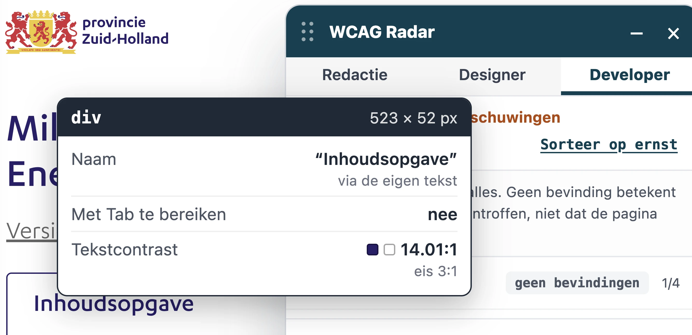
Op een klein scherm verschijnt op deze pagina een knop “Inhoudsopgave”. Die knop heeft niet de juiste rol en geeft ook niet door of de inhoudsopgave open of dicht staat. Schermlezers herkennen het element daardoor niet als knop. Bezoekers die blind zijn, weten dan niet dat ze het element kunnen activeren.
Ik lees de website met een schermlezer. Als ik door de pagina navigeer, hoor ik niet dat een element een knop is. Ik verwacht dat mijn schermlezer aankondigt dat ik het kan activeren en of het onderdeel open of dicht staat.
Hoe te testen
Bekijk het interactieve element en controleer of het de rol button heeft: een schermlezer hoort "knop" aan te kondigen. Controleer daarna met het toetsenbord of zowel Enter als de spatiebalk het element activeert, en of de status open of dicht wordt aangekondigd.
Oplossing
Geef de knop de juiste rol, op een van deze twee manieren:
Gebruik het button-element. Dat element heeft de rol van knop al.
Voeg role="button" toe. Dat is nodig als er een ander element wordt gebruikt, wat wij niet aanraden.
Geef de status door met het aria-expanded-attribuut: aria-expanded="true" als de inhoudsopgave open staat en aria-expanded="false" als die dicht staat. Bezoekers met een schermlezer horen dan het verband tussen de knop en de inhoudsopgave.
#27 - Kleur wordt gebruikt om informatie in het diagram te onderscheiden
Impact: MediumType: InhoudWCAG: 1.4.1EN: 9.1.4.1
Op deze pagina staat een diagram waarin alleen kleur informatie onderscheidt. Zie het grijs in de legenda. Alleen bezoekers die de kleuren kunnen zien en van elkaar kunnen onderscheiden, weten welke kleur bij welke categorie hoort.
User story
Ik zie het verschil tussen kleuren niet. Als een diagram alleen kleur gebruikt om de legenda aan de vlakken te koppelen, begrijp ik de verhouding tussen die vlakken niet en kan ik het diagram niet gebruiken.
Hoe te testen
Bekijk de pagina in grijstinten: open de WCAG Radar en zet de optie "Grijstinten" aan. Controleer of de onderdelen van het diagram en de items in de legenda zonder kleur nog van elkaar te onderscheiden zijn. Er is een tweede kenmerk nodig: tekst, een icoon, een lijn of een patroon.
Oplossing
Gebruik naast kleur ook patronen of vormen, of zet labels bij de gegevens. Een andere mogelijkheid is dezelfde informatie in tekst of in een tabel te geven.
#28 - Onvoldoende contrast van de tekst in het diagram
In het diagram staat witte tekst op verschillende achtergronden. Op een aantal van die achtergronden heeft de tekst te weinig contrast, bijvoorbeeld witte tekst op de goudkleurige (#A87B29) vlakken. De contrastverhouding is 3,8:1. Niet alle bezoekers kunnen die tekst lezen.
User story
Ik ben slechtziend. Als tekst te weinig contrast heeft met de achtergrond waarop die staat, wordt de tekst moeilijk te lezen. Ik verwacht genoeg contrast om de tekst makkelijk te lezen.
Hoe te testen
Open de WCAG Radar en zet de optie "Contrast" aan. Tekst op een egale achtergrond met te weinig contrast wordt automatisch gemeld. Voor tekst op een foto of een verloop meet je met de twee pipetten de kleur van de tekst en van de achtergrond. Het minimum is 4,5:1 voor gewone tekst en 3,0:1 voor grote tekst (24 px of groter, of 18,7 px of groter bij vette tekst). Vergeet placeholders, tekst op afbeeldingen en elementen die uitgeschakeld lijken niet.
Oplossing
Deze tekst is kleiner dan 19 px, dus het contrast moet minimaal 4,5:1 zijn.
Ik zoom in tot 400% om de pagina te lezen. Bij dat inzoomen verschijnt een horizontale scrollbalk en moet ik op elke regel heen en weer scrollen. Ik verwacht dat de tekst automatisch binnen de breedte van mijn scherm past.
Hoe te testen
Zet de browser op een breedte van 320 CSS-pixels (of 1280 px met 400% zoom) en scroll verticaal. Om de tekst te lezen hoort horizontaal scrollen niet nodig te zijn, behalve bij inhoud die twee richtingen echt nodig heeft, zoals tabellen, kaarten en code.
Oplossing
Zorg dat de tekst binnen de breedte van het scherm past, ook bij een breedte van 320 CSS-pixels voor verticale inhoud en een hoogte van 256 CSS-pixels voor horizontale inhoud. Scrollen in twee richtingen mag alleen als de inhoud dat echt nodig heeft. Uitzonderingen zijn tabellen, betekenisvolle afbeeldingen en kaarten; die moeten leesbaar blijven, dus scrollen binnen die elementen mag.
Op deze pagina staat een combobox “Versies”. Binnen die combobox is de toetsenbordfocus alleen te zien doordat de achtergrondkleur van de optie van wit naar lichtgrijs verandert. Bezoekers die slechtziend zijn of kleuren niet goed onderscheiden, zien die focus niet.
User story
Ik onderscheid kleuren niet goed. Als ik door de pagina ga, zie ik niet duidelijk welk element focus heeft. Ik verwacht dat een focusindicator aan meer dan alleen een kleurverschil te zien is.
Hoe te testen
Bekijk de pagina in grijstinten: open de WCAG Radar en zet de optie "Grijstinten" aan. Controleer of de toetsenbordfocusindicator zonder kleur nog opvalt. Er is een tweede kenmerk nodig: tekst, een icoon, een lijn of een patroon.
Oplossing
Voeg naast het kleurverschil een tweede kenmerk toe, bijvoorbeeld een dikkere rand, een onderlijning of een duidelijker verschil in achtergrond. Je kunt ook terugvallen op de standaard focusindicator van de browser. Alle bezoekers kunnen dan zien welk element toetsenbordfocus heeft.
#31 - Eigen focusindicator heeft te weinig contrast
Op deze pagina staat een combobox “Versies”. Binnen die combobox is de toetsenbordfocus alleen te zien doordat de achtergrondkleur van de optie van wit naar lichtgrijs verandert. Dat lichtgrijs (#F2F7FC) op een witte achtergrond heeft een contrastverhouding van 1,1:1, onder het vereiste minimum van 3,0:1.
Voor een eigen focusindicator gelden contrasteisen, anders dan voor de standaard focusindicator van de browser. Bezoekers kunnen een eigen focusindicator niet aanpassen, dus die moet minimaal 3,0:1 contrast hebben met de achtergrond.
User story
Ik gebruik de website met een toetsenbord en ik ben slechtziend. Als ik door de pagina navigeer, zie ik niet duidelijk welk element focus heeft. Ik verwacht dat de focusindicator duidelijk opvalt tegen de achtergrond.
Hoe te testen
Ga met de Tab-toets naar het element, zodat de eigen focusindicator verschijnt. Meet het contrast van die focusindicator tegen de achtergrond ernaast met de Colour Contrast Analyser of met de optie "Contrast" van de WCAG Radar. De verhouding moet minimaal 3,0:1 zijn.
Oplossing
Zorg hier voor een minimaal contrast van 3,0:1.
#32 - Onvoldoende contrast van de voetnootverwijzingen
Op deze pagina staat blauwe (#7BADDE) tekst op een witte achtergrond, bijvoorbeeld “[1]”. De contrastverhouding is 2,4:1. Niet alle bezoekers kunnen die tekst lezen.
Ik ben slechtziend. Als tekst te weinig contrast heeft met de achtergrond waarop die staat, wordt de tekst moeilijk te lezen. Ik verwacht genoeg contrast om de tekst makkelijk te lezen.
Hoe te testen
Open de WCAG Radar en zet de optie "Contrast" aan. Tekst op een egale achtergrond met te weinig contrast wordt automatisch gemeld. Voor tekst op een foto of een verloop meet je met de twee pipetten de kleur van de tekst en van de achtergrond. Het minimum is 4,5:1 voor gewone tekst en 3,0:1 voor grote tekst (24 px of groter, of 18,7 px of groter bij vette tekst). Vergeet placeholders, tekst op afbeeldingen en elementen die uitgeschakeld lijken niet.
Oplossing
Deze tekst is kleiner dan 19 px, dus het contrast moet minimaal 4,5:1 zijn.
#33 - Datatabel mist de juiste markering
Impact: MediumType: InhoudWCAG: 1.3.1EN: 9.1.3.1
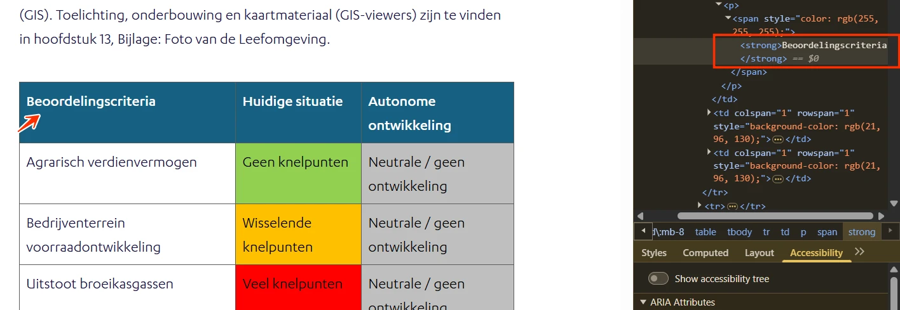
Op deze pagina staat onder de kop “Referentiesituatie: hoe staat de leefomgeving ervoor?” een datatabel waarin een strong-element wordt gebruikt in plaats van een kopcel.
Een datatabel heeft een kolom of rij met kopcellen die bij de datacellen horen. Een schermlezer heeft de juiste markering nodig om dat verband over te brengen aan een bezoeker die blind is. Bij de tabellen verderop op de pagina doet hetzelfde probleem zich voor.
Ik lees de website met een schermlezer. Als mijn schermlezer een tabel voorleest, hoor ik alleen de inhoud van de cellen zonder context. Ik verwacht dat mijn schermlezer bij elke cel de bijbehorende kop aankondigt.
Hoe te testen
Open de WCAG Radar en zet de optie "Tabellen" aan, of bekijk de eerste rij en de eerste kolom van de tabel in DevTools. Kopcellen horen een <th>-element te zijn en geen <td>-element met vette opmaak. Controleer met een schermlezer of de koppen samen met de datacellen worden aangekondigd.
Oplossing
Verwijder het strong-element, zet de kopcellen in <th>-elementen en de datacellen in <td>-elementen. Een minimale toegankelijke datatabel ziet er zo uit:
Onder de kop “ZH-PLG: grondwaterstand verhogen” zijn teksten visueel opgemaakt als kop, terwijl ze in de code geen kop zijn. Er staat een strong-element om ze op een kop te laten lijken. Zie bijvoorbeeld “ZHPLG: grondwaterstand verhogen”.
Het strong-element betekent "belangrijk". Wie het in plaats van een kop-element (h1 tot h6) gebruikt, geeft de structuur van de inhoud verkeerd weer en maakt die structuur onbruikbaar voor hulpsoftware.
Verderop op de pagina doet hetzelfde probleem zich voor, bijvoorbeeld onder de kop “ZH-PLG: boerenlandvogels”.
User story
Ik lees de website met een schermlezer. Als ik van kop naar kop navigeer, mis ik de koppen die niet als kop zijn gemarkeerd. Ik verwacht dat alle koppen echte koppen zijn, zodat ik de structuur van de pagina kan volgen.
Hoe te testen
Open de WCAG Radar, zet de optie "Koppen" aan en controleer elke kop op de pagina. Krijgt een kop geen label h1 tot h6, dan is die kop niet goed gemarkeerd.
Oplossing
Verwijder de strong-elementen en gebruik voor deze teksten de juiste kop-elementen.
#35 - strong en em alleen gebruikt voor visuele nadruk
Impact: KleinType: InhoudWCAG: 1.3.1EN: 9.1.3.1
Onder de kop “ZH-PLG: grondwaterstand verhogen” staan strong- en em-elementen om tekst visueel te laten opvallen, terwijl de inhoud zelf geen nadruk nodig heeft. Zie bijvoorbeeld “Doelstelling: In het Nationaal Klimaatakkoord … reductie (naar nul emissie) in 2050.”
Het strong-element betekent "belangrijk" en het em-element betekent "nadruk in spraak". Schermlezers veranderen daar vaak hun toon voor. Worden die elementen voor opmaak gebruikt, dan krijgen willekeurige woorden nadruk en krijgt de voorgelezen tekst een betekenis die de schrijver niet bedoelde.
Verderop op de pagina doet hetzelfde probleem zich voor, bijvoorbeeld onder de kop “ZH-PLG: boerenlandvogels”.
User story
Ik lees de website met een schermlezer. Ik verwacht dat alleen woorden die echt belangrijk zijn extra nadruk krijgen.
Hoe te testen
Open de WCAG Radar en zet in het onderdeel Tekst de opties "Sterke nadruk (strong)" en "Nadruk (em)" aan. De Radar markeert elk strong- en em-element op de pagina en telt hoe vaak zo'n element om een hele zin of een hele alinea heen staat.
Loop de gemarkeerde plekken langs en vraag je bij elke af: is dit woord echt belangrijk, of zou je het in spraak benadrukken? Zo niet, dan hoort het niet in een strong- of em-element en hoort de opmaak in CSS.
Let op de nadruk om een hele zin of een hele alinea. strong hoort om het woord of de paar woorden waar het om draait; nadruk op alles is nadruk op niets.
Terecht gebruik is bijvoorbeeld een waarschuwing ("verwijder dit nooit"), een kernbegrip op de plek waar het wordt uitgelegd, of een woord dat de betekenis van de zin verandert ("ik zei dat niet"). Productnamen, koppen en decoratieve woorden krijgen geen nadruk met strong of em.
Oplossing
Gebruik strong en em alleen als een woord of zinsdeel echt belangrijk is, of in spraak nadruk zou krijgen. Wil je tekst alleen visueel laten opvallen, gebruik dan CSS, bijvoorbeeld een eigen class met font-weight: bold of font-style: italic.
#36 - Onvoldoende contrast van de tekst op de knop
Onder de kop “ZH-PLG: boerenlandvogels” staat een blauwe (#7BADDE) knop “[5]” op een grijze (#9B9B9B) achtergrond. De contrastverhouding is 1,2:1. Niet alle bezoekers kunnen die tekst lezen.
User story
Ik ben slechtziend. Als tekst te weinig contrast heeft met de achtergrond waarop die staat, wordt de tekst moeilijk te lezen. Ik verwacht genoeg contrast om de tekst makkelijk te lezen.
Hoe te testen
Open de WCAG Radar en zet de optie "Contrast" aan. Tekst op een egale achtergrond met te weinig contrast wordt automatisch gemeld. Voor tekst op een foto of een verloop meet je met de twee pipetten de kleur van de tekst en van de achtergrond. Het minimum is 4,5:1 voor gewone tekst en 3,0:1 voor grote tekst (24 px of groter, of 18,7 px of groter bij vette tekst).
Oplossing
Deze tekst is kleiner dan 19 px, dus het contrast moet minimaal 4,5:1 zijn.
#37 - Schermlezer krijgt niet door of de inhoudsopgave open of dicht staat
Impact: GrootType: TechniekWCAG: 4.1.2EN: 9.4.1.2
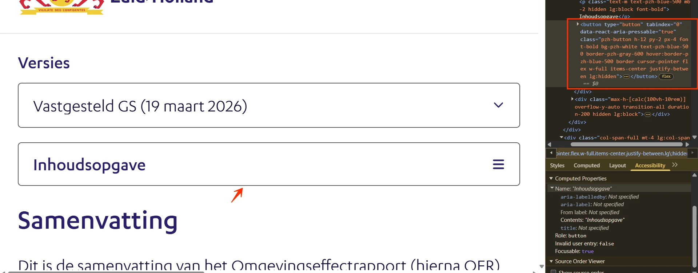
Op een klein scherm staat er een knop “Inhoudsopgave” die de inhoudsopgave opent en sluit. Visueel is te zien of die open of dicht staat. In de code staat die status niet, dus een schermlezer kondigt hem niet aan.
Ik lees de website met een schermlezer. Als ik een knop activeer, hoor ik niet of het onderdeel open of dicht staat. Ik verwacht dat mijn schermlezer vertelt of een onderdeel uitgeklapt of ingeklapt is.
Hoe te testen
Bekijk elk interactief onderdeel (link, knop, invoerveld, eigen widget) in het toegankelijkheidspaneel van DevTools en met een schermlezer. Elk onderdeel moet overbrengen: wat het is (de rol), de naam, de huidige status (uitgeklapt, geselecteerd, aangevinkt) en waar van toepassing de waarde. Geef native HTML de voorkeur boven eigen ARIA.
Oplossing
Dat kan op twee manieren:
Voeg het aria-expanded-attribuut toe aan het element dat de inhoudsopgave opent en sluit. De waarde is true als de inhoudsopgave open staat en false als die dicht staat, en verandert mee met de status.
Zet visueel verborgen tekst in de knop die de status aangeeft, bijvoorbeeld "(open)" of "(dicht)", en werk die tekst bij zodra de status verandert. Een schermlezer leest die tekst voor terwijl hij visueel niet te zien is.
#38 - Linktekst is niet duidelijk genoeg
Impact: MediumType: InhoudWCAG: 2.4.4EN: 9.2.4.4
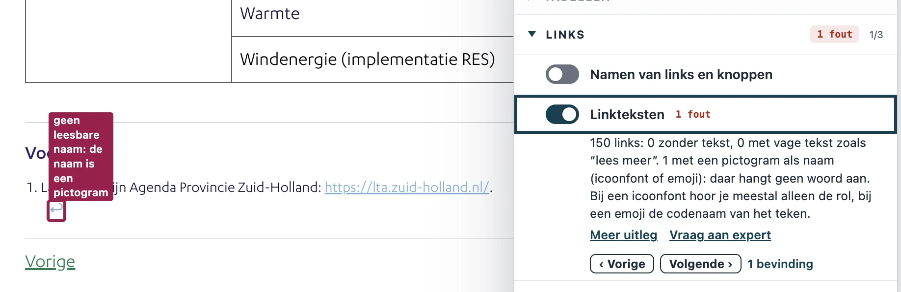
Op deze pagina hebben meerdere links de vage linktekst "↩︎". Die tekst beschrijft niet waar de link naartoe gaat. Vooral bezoekers met een cognitieve beperking en bezoekers met een schermlezer hebben daar last van.
Ik lees de website met een schermlezer. Als ik een lijst met links op de pagina opvraag, zie ik alleen labels als "↩︎". Ik verwacht dat elke link beschrijft waar hij naartoe gaat.
Hoe te testen
Open de WCAG Radar en zet de optie "Links" aan. Je krijgt dan alle links op de pagina te zien. Lees die lijst en beoordeel of elke linktekst op zichzelf te begrijpen is, los van de omliggende tekst.
Oplossing
Zorg dat de linktekst duidelijk maakt waar de link naartoe gaat. Is de context visueel duidelijk, bijvoorbeeld binnen een bepaald onderdeel, dan kun je de vage tekst aanvullen met visueel verborgen tekst, bijvoorbeeld "terug naar de voetnoot":
<ahref="">↩︎<spanclass="sr-only"> terug naar de voetnoot</span></a>
Op deze pagina zijn teksten visueel opgemaakt als kop, terwijl ze in de code geen kop zijn. Er staat een em-element om ze op een kop te laten lijken. Zie “Werkwijze bijeenkomst 1”, “Werkwijze bijeenkomst 2” en “Werkwijze bijeenkomst 3”.
Het em-element betekent "nadruk in spraak". Wie het in plaats van een kop-element (h1 tot h6) gebruikt, geeft de structuur van de inhoud verkeerd weer en maakt die structuur onbruikbaar voor hulpsoftware.
User story
Ik lees de website met een schermlezer. Als ik van kop naar kop navigeer, mis ik de koppen die niet als kop zijn gemarkeerd. Ik verwacht dat alle koppen echte koppen zijn, zodat ik de structuur van de pagina kan volgen.
Hoe te testen
Open de WCAG Radar, zet de optie "Koppen" aan en controleer elke kop op de pagina. Krijgt een kop geen label h1 tot h6, dan is die kop niet goed gemarkeerd.
Oplossing
Verwijder de em-elementen en gebruik voor deze teksten de juiste kop-elementen.
Dit PDF-document heeft geen tags. De inhoud is daardoor niet beschikbaar voor een schermlezer. Zonder die tags is het document ook niet volledig te beoordelen: alle succescriteria die over de codelaag van de PDF gaan, bijvoorbeeld koppen en tekstalternatieven bij afbeeldingen, zijn niet te toetsen. Bij het toevoegen van tags kunnen dus nieuwe bevindingen aan het licht komen.
Ik kan het document niet zien en gebruik een schermlezer. Als ik een PDF zonder tags open, is er geen inhoud die mijn schermlezer kan voorlezen. Ik verwacht een PDF met tags, zodat alle inhoud voor mij beschikbaar is.
Hoe te testen
Open de PDF in Adobe Acrobat Pro en bekijk de tagstructuur (Weergave > Tonen/verbergen > Navigatiedeelvensters > Tags). Visuele koppen, lijsten, tabellen en formuliervelden horen allemaal als tag te bestaan (<H1> tot <H6>, <L>, <Table> met <TH>, <TR> en <TD>, en <Form>). Draai daarnaast de eigen toegankelijkheidscontrole van Acrobat en PAC (PDF Accessibility Checker), en controleer met een schermlezer of de structuur klopt als je het document van boven naar beneden leest.
Oplossing
Voeg tags toe die de structuur van het document weergeven.
#41 - Taal van de PDF is niet ingesteld
Impact: MediumType: InhoudWCAG: 3.1.1EN: 9.3.1.1
In de metadata van deze PDF is de taal niet ingesteld. Die taal hoort er wel te staan, zodat een schermlezer de inhoud in de juiste taal voorleest. De instelling staat bij de documenteigenschappen.
Ik lees PDF's met een schermlezer. Ik wil dat bij elke PDF de taal in de documenteigenschappen staat. Zonder taalinstelling kiest mijn schermlezer zelf een taal en gebruikt hij de verkeerde uitspraakregels.
Hoe te testen
Open de PDF in Adobe Acrobat. Ga naar Bestand > Eigenschappen > Geavanceerd en controleer of bij "Leesopties > Taal" de taal van het document staat. Laat het document daarna voorlezen met een schermlezer en controleer of de uitspraak klopt.
Oplossing
Stel de taal in bij de documenteigenschappen van de PDF. In Adobe Acrobat: ga naar Bestand > Eigenschappen > tabblad Geavanceerd en kies de juiste taal in het veld Taal.
#42 - Titel van de PDF beschrijft de inhoud niet
Impact: MediumType: InhoudWCAG: 2.4.2EN: 9.2.4.2
Dit PDF-document heeft in de documenteigenschappen de titel “20220505_Alternatief 1_zonwind_donker”. Die titel beschrijft de inhoud van het document niet. Een PDF hoort een duidelijke titel te hebben die het onderwerp weergeeft. Bezoekers zien dan snel of het document over hun onderwerp gaat.
Ik lees de PDF met een schermlezer. Als ik een PDF open, hoor ik geen duidelijke titel die vertelt waarover het document gaat. Ik verwacht dat de titel van de PDF het onderwerp direct beschrijft.
Hoe te testen
Open de PDF in Adobe Acrobat Pro en bekijk Bestand > Eigenschappen > Beschrijving: in het veld Titel hoort het onderwerp van het document te staan en niet de bestandsnaam. Controleer daarna of bij Beginweergave > Tonen de optie "Documenttitel" is gekozen, zodat de titel in het venster of de tab staat. Controleer met NVDA of VoiceOver of de titel wordt aangekondigd zodra de PDF opent, en draai PAC voor een automatische controle.
Oplossing
Pas de titel aan bij de documenteigenschappen van het bronbestand of van de PDF zelf. Gebruik bijvoorbeeld “Kaartbeeld alternatief RES 1.0-basis (zonne- en windenergie)”.
#43 - Alleen kleur koppelt de legenda aan de kaart
Impact: MediumType: InhoudWCAG: 1.4.1EN: 9.1.4.1
In dit PDF-document staat een kaart waarin alleen kleur informatie overbrengt. Zie de legenda en de kleuren op de kaart. Alleen bezoekers die de kleuren kunnen zien en van elkaar kunnen onderscheiden, weten welk vlak bij welk item in de legenda hoort.
Ik onderscheid kleuren niet goed. Als in een kaart alleen kleur wordt gebruikt, kan ik de vlakken niet aan de legenda koppelen.
Hoe te testen
Open de PDF in Adobe Acrobat Pro, maak van elke pagina een schermafdruk en zet die om naar grijstinten (of print de pagina in zwart-wit). Overal waar kleur informatie overbrengt is een tweede kenmerk nodig: tekst, een icoon, een patroon of een vorm.
Oplossing
Gebruik naast kleur ook patronen of vormen.
#44 - Onvoldoende contrast van informatieve elementen
In dit PDF-document hebben een aantal kleuren in de legenda en op de kaart te weinig contrast met de witte achtergrond. Bijvoorbeeld het lichtgele (#FFFCAC) vlak op een lichtblauwe (#E0EEF3) achtergrond. De contrastverhouding is 1,1:1.
Ik ben slechtziend en heb goed contrast nodig. Ik wil dat vlakken, lijnen en iconen duidelijk opvallen tegen de achtergrond. Zonder dat contrast vallen categorieën weg en mis ik informatie.
Hoe te testen
Meet met de Colour Contrast Analyser het contrast tussen het element en de achtergrond ernaast. Het minimum is 3,0:1. Je kunt ook de WCAG Radar gebruiken met de optie "Contrast".
Oplossing
Zorg hier voor een minimaal contrast van 3,0:1. Controleer alle kleuren in deze legenda en op deze kaart.
De bevindingen in deze PDF staan hierboven al beschreven.
Over dit onderzoek
Leeswijzer
Onze rapporten zijn anders. Bij het bespreken van de gevonden problemen volgen wij niet de structuur van de norm, maar die van jouw website of app. Hierdoor kun je gewoon per pagina of scherm aan de slag gaan. Wel zo makkelijk! Je vindt verderop een overzicht van alle pagina’s met problemen.
We geven je bij elk gevonden issue een paar voorbeelden, maar niet een complete lijst. Controleer zelf of het probleem ook nog op andere plekken voorkomt. Zie het rapport als een leidraad.
Gebruikte norm
Dit onderzoek laat zien in hoeverre de website op dit moment voldoet aan WCAG 2.2, niveau A en AA. WCAG staat voor Web Content Accessibility Guidelines. Dit is de internationale norm voor digitale toegankelijkheid. De Europese norm EN 301 549 bevat alle eisen van WCAG op niveau A en AA.
In dit rapport hebben we korte beschrijvingen van de succescriteria uit de norm opgenomen, met een algemene uitleg erbij. Wil je ze helemaal lezen? Bekijk dan de documentatie van WCAG.
Gebruikte onderzoeksmethode
We gebruiken de onderzoeksmethode WCAG-EM van het W3C. Het proces ziet er als volgt uit:
vaststellen wat binnen en buiten scope valt
vaststellen welke technologieën zijn gebruikt
steekproef (sample) samenstellen
steekproef onderzoeken
gevonden issues beschrijven
Het grootste deel van het onderzoek doen we met de hand. Voor een deel van de toegankelijkheidseisen gebruiken we automatische tools als ondersteuning, zoals axe-core en Chrome Developer Tools.
Belangrijk om te weten
Dit rapport helpt je om de toegankelijkheid van je website te verbeteren. Maar let op: het is geen definitieve, volledige lijst van alle aanwezige toegankelijkheidsproblemen. Dat zit zo:
Het is een steekproef
Ten eerste is het onderzoek gebaseerd op een steekproef. Die is op een betrouwbare manier genomen, en de meeste problemen zullen daardoor zeker aan het licht komen. Toch kan een probleem net buiten de steekproef vallen. Bij een volgend onderzoek kan het wel ontdekt worden.
Op basis van falsificatie
We beoordelen vanuit het principe van falsificatie. Dat houdt in dat we proberen te bewijzen dat iets niet waar is, in plaats van te bevestigen dat het klopt. ‘Voldoet’ betekent daarom dat we geen reden hebben gevonden om een punt af te keuren. Maar als we later wél een reden vinden, kan het alsnog worden afgekeurd.
Voortschrijdend inzicht
Het komt voor dat de beoordeling van een succescriterium op detailniveau verandert. De norm beschrijft namelijk niet élk mogelijk scenario. Samen met andere onderzoeksbureaus overleggen we hoe we met bepaalde situaties omgaan. Zo kan iets dat nu wordt afgekeurd, soms bij een volgend onderzoek worden goedgekeurd en andersom.
Oplossen leidt tot nieuw probleem
Ten slotte kan het gebeuren dat bij het oplossen van een probleem onbedoeld een nieuw toegankelijkheidsprobleem ontstaat. Dat komt dan bij een volgend onderzoek pas naar voren.
Hoe werkt dit rapport?
Bevindingen bekijken en filteren
Alle gevonden toegankelijkheidsproblemen staan onder Gevonden problemen. Je kunt de bevindingen filteren op:
Impact (Groot, Medium, Klein, Advies) — hoe ernstig is het probleem voor de gebruiker?
Type (Content, Techniek) — moet de inhoud of de techniek worden aangepast?
Status (Open, Opgelost) — welke problemen zijn al verholpen?
Voortgang bijhouden
Je kunt je voortgang op twee manieren bijhouden:
CSV-export — exporteer alle bevindingen als CSV-bestand en laad het in een (online) spreadsheet om met je team samen te werken.
Jira-export — exporteer alle bevindingen als Jira-compatibel CSV-bestand. Importeer het via Jira > Issues > Import issues from CSV. Bevindingen worden aangemaakt als bugs met prioriteit op basis van impact.
Registreer in de browser — activeer deze optie om per bevinding bij te houden of het is opgelost. Je voortgang wordt opgeslagen in je browser. Niemand anders kan je resultaat zien. Let op: de voortgang is gekoppeld aan je browser. Als je een andere browser of een ander apparaat gebruikt, begint de telling opnieuw.
Plan van aanpak — download een geprioriteerd plan van aanpak om de gevonden problemen stap voor stap op te lossen. Dit is beschikbaar bij audits vanaf maart 2026.
Link naar een specifieke bevinding delen
Bij elke bevinding verschijnt een link-icoon wanneer je er met de muis overheen gaat. Klik op dit icoon om de directe link naar die bevinding te kopiëren. Je kunt deze link plakken in een e-mail of chatbericht, bijvoorbeeld om een vraag te stellen aan Proper Access over een specifiek punt.